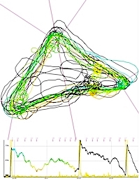

Summer 2021, NAN Xplorer 3 with 3,8 m wing span
The Xplorer 3, with its low wing loading and ballasting capability, is intended to be used for flying GPS triangles in the Light class. Despite the low flying weight of 1.9 kg mass, the Xplorer tolerates more wind than one would expect. But with 500gr ballast it is a lot faster on the way and lies more saturated in the air. Unfortunately, after completion the best time for GPS triangles was over. So the plane has to show what is possible next year.
